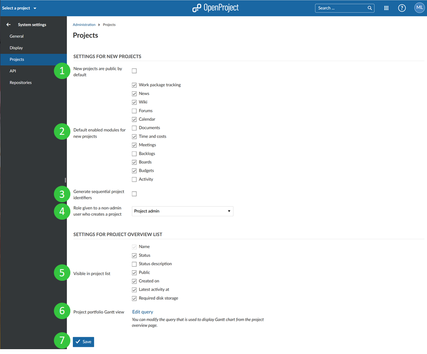

Project system settings
To adapt the system project settings, go to System settings on the tab Projects where you can configure the following options.
Settings for new projects
- Check if new projects are public by default. This means that users without an account can access the project without login.
- Select which modules should be activated for newly created projects per default.
- Choose whether sequential project identifiers should be created. If this option is activated, a project identifier for the next project will be offered automatically, based on the existing project name. For example, if a project “Myproject1” was created, “Myproject2” will be offered as identifier for the next project.
- The role given to a user in a new project when the user creates a new project but is not an (global) admin. This makes sense when a user receives the permission to create a new project via global role.
Settings for the Projects Overview List
-
Choose which columns should be visible in the Projects Overview List by default.
-
Define the settings for the Gantt chart view displayed when clicking on “Open as Gantt view” in the Projects Overview List. You can choose filters, columns, sorting and more to configure the view. For more information on how the configuration works please refer to the instructions for the work package table configuration in the User Guide (as the basic principles are the same).
-
Do not forget to save your changes.
